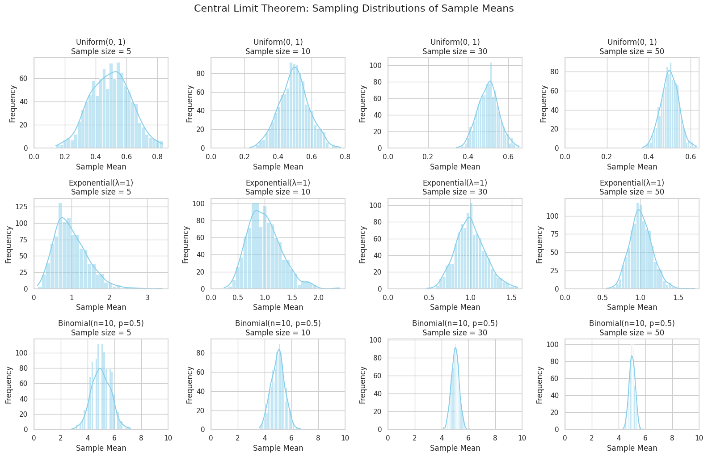

Problem 1
üéØ Motivation
The Central Limit Theorem (CLT) is one of the most important results in statistics. It states that the distribution of sample means tends to follow a normal distribution as the sample size increases, regardless of the original population's distribution, provided the population has a finite variance.
Understanding the CLT is essential because it justifies why the normal distribution appears so frequently in statistics and science. It enables the use of confidence intervals, hypothesis testing, and many modeling techniques.
Simulations offer an intuitive way to observe how and why the CLT works.
1️⃣ Simulating Sampling Distributions (Conceptually)
We consider the following population distributions:
- Uniform Distribution: Every value within a range is equally likely.
- Exponential Distribution: Often models waiting times; it is positively skewed.
- Binomial Distribution: Discrete distribution modeling a fixed number of trials with success/failure outcomes.
From each of these populations, we draw many random samples (repeated sampling) of various sizes (e.g., 5, 10, 30, 50). For each sample, we calculate the sample mean.
By collecting the sample means over many repetitions (e.g., 1000 times), we construct the sampling distribution of the sample mean for each sample size.
2️⃣ Sampling and Visualization (Conceptual Description)
Sample Sizes Considered:
- Small: 5, 10
- Moderate: 30
- Large: 50
Conceptual Observations:
For each population distribution, we examine how the histogram of sample means behaves:
- With small sample sizes, the sampling distribution may resemble the original population's shape.
- As the sample size increases, the sampling distribution of the sample mean becomes more bell-shaped and symmetrical, approaching a normal distribution.
For Each Distribution:
A. Uniform Distribution
- Original shape: flat (equal probability across range).
- As sample size increases:
- Sampling distribution becomes smoother.
- Rapid convergence to a normal shape.
B. Exponential Distribution
- Original shape: highly right-skewed.
- Sampling distribution:
- Initially retains skewness for small samples.
- Gradually becomes symmetric and bell-shaped for larger samples.
- Converges more slowly than the uniform case.
C. Binomial Distribution
- Original shape: discrete and symmetric if \(p = 0.5\).
- As sample size increases:
- Sampling distribution becomes more continuous.
- Converges to a normal shape relatively quickly.
3️⃣ Parameter Exploration
A. Effect of Original Distribution
- The more skewed or non-normal the population distribution is, the slower the convergence to normality.
- Uniform and binomial (with \(p = 0.5\)) converge quickly.
- Exponential, being skewed, requires larger samples to appear normal.
B. Effect of Sample Size
- Larger sample sizes lead to:
- Narrower sampling distributions.
- Closer approximation to the normal distribution.
According to CLT:
Where \(\sigma\) is the population standard deviation, and \(n\) is the sample size.
C. Effect of Population Variance
- Populations with larger variance produce sampling distributions that are more spread out.
- However, the square root rule ensures that as sample size increases, the spread still decreases.
4️⃣ Practical Applications
A. Estimating Population Parameters
Even if the population is not normally distributed, we can confidently estimate the population mean using sample data due to CLT.
B. Quality Control in Manufacturing
Companies use sample means of product measurements (e.g., weight, size, voltage) to monitor production.
CLT allows the use of control charts based on normal distribution.
C. Predicting Outcomes in Finance
In portfolio theory, the average return over time is assumed to follow a normal distribution, enabling risk prediction and option pricing.
D. Medical and Social Sciences
CLT justifies using t-tests and confidence intervals in survey analysis and experimental research.
✅ Conclusion
The Central Limit Theorem shows the remarkable fact that sample means will follow a normal distribution as sample size increases, regardless of how the underlying data is distributed.
From a theoretical and conceptual point of view:
- Uniform and binomial populations show quick convergence to normality.
- Skewed distributions (like exponential) converge more slowly but still follow the CLT.
- Larger sample sizes reduce variability and improve normal approximation.
The CLT is a critical foundation for many statistical methods used in science, industry, economics, and beyond.
